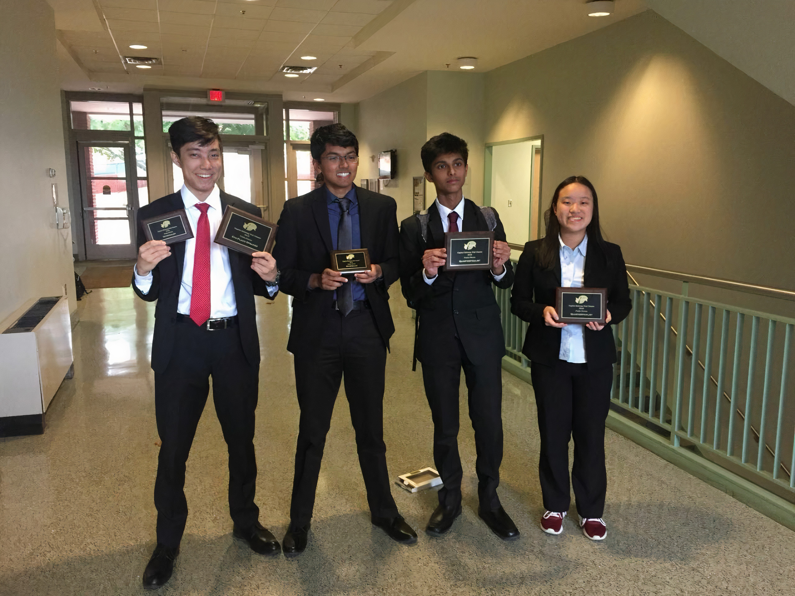

— Our Story —
South Debate Club was founded in 1970 making it the oldest club in High School South’s history. It was originally created for the purpose of competing in the Colonial Valley Conference, an 8 week regional policy debate tournament between the top 12 schools in the area. While South still competes in CVC annually, it has branched out from the format for which it was created. At some point from 1970-2000, South began to participate in Princeton Moot Court, a competition that mocks a constitutional/congressional law hearing in front of the supreme court. Throughout this period, South performed consistently well in both formats, placing within the top 5 seeds annually for both competitions. Despite this success, South had not gone through its biggest change yet.
It was not until 2014 where South finally began to compete in the National Circuit. South was introduced to Public Forum, the most popular debate format where teams of 2 compete in researched debates on current events. Quickly, South began to succeed in the circuit, with multiple teams eventually qualifying for the Tournament of Champions. Over the next 7 years, South saw more success than it ever had in its past: South won CVC 3 times, placed 6 teams in the top 5 for Princeton Moot Court, and had 10 members qualify for Silver TOC. South has only continued to rise up the state rankings and we can only expect bigger and better things in its future.